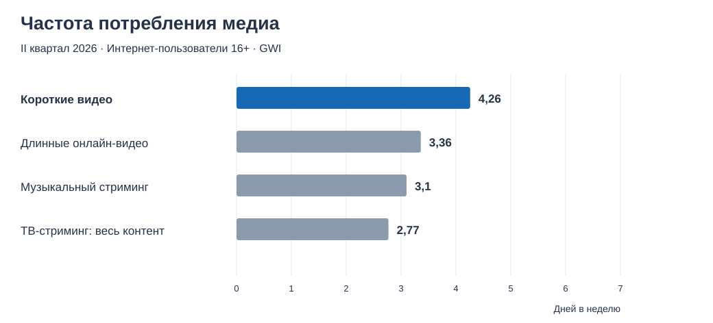
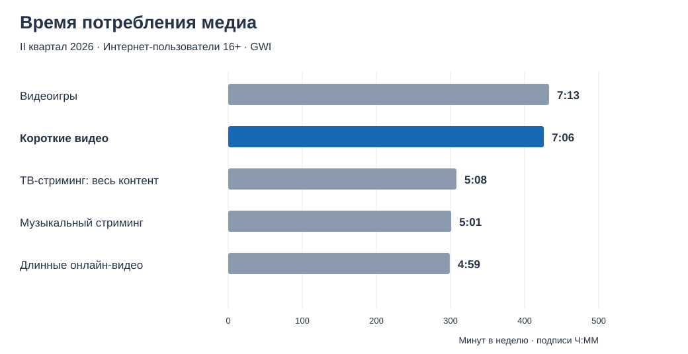
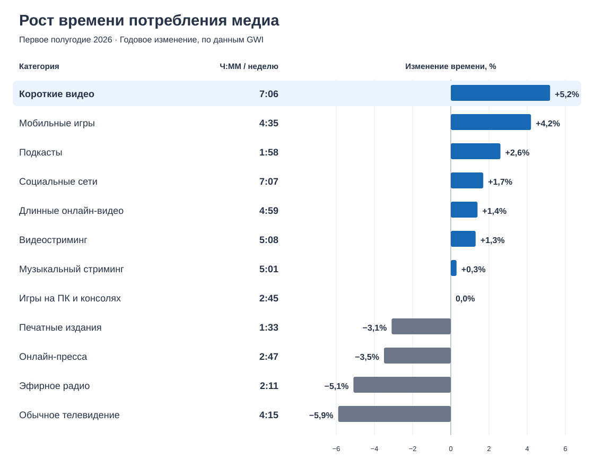
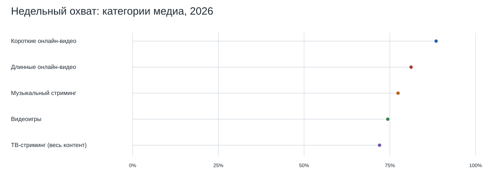
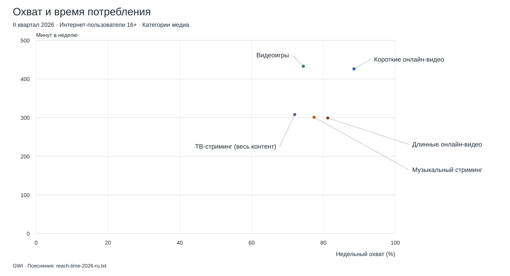
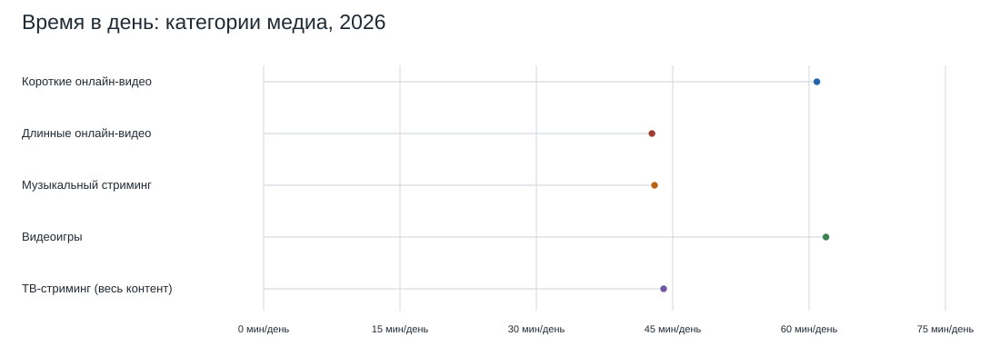

Недельный охват медиа
 Пояснения (текстовый файл)
Пояснения (текстовый файл)Два отдельных сравнения: форматы произведений и медиакомпоненты внутри этих форматов. Графики ниже показывают широкие категории форматов; музыкальный стриминг выделен отдельно. Суммарные показатели компонентов не измерены; картина в вертикальном видео учитывается как контакт с изображением. Сравнение компонентов и пробелы в данных · Правила учёта.
По состоянию на 9 ноября 2026 года. Восемь категорий медиаконтента, распространяемого через интернет. Наблюдаемые данные и контекстные показатели.
Финансовые наблюдения сохранены в исходных таблицах без общего графика. Источники и ограничения графика охвата и времени приведены в соседнем текстовом файле. Для изображений нет сопоставимых данных о потреблении и выручке. Длинные онлайн-видео служат широкой заменой категории горизонтальных произведений; финансового ряда для них нет. Авторские интерпретации и радиальные профили вынесены в отдельный раздел.
Графики GWI · Описание исследования · Ограничения · Источники · Авторские интерпретации и радиальные диаграммы

Пояснения (текстовый файл)Пояснения (текстовый файл)
Пояснения (текстовый файл)
Пояснения (текстовый файл)
Пояснения (текстовый файл)
Пояснения (текстовый файл)
Пояснения (текстовый файл)